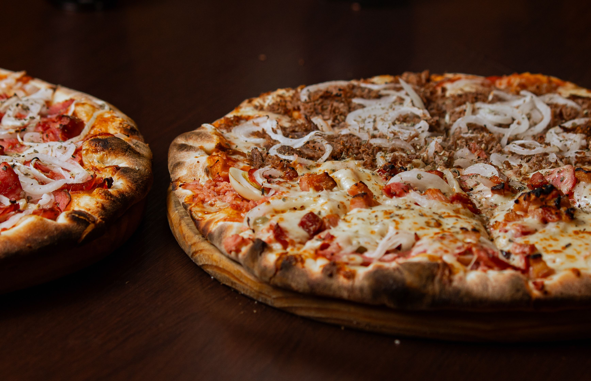

Home
pizza

Description
This is a delicious homemade pizza featuring a crispy golden crust, savory tomato sauce, melted mozzarella cheese, and your favorite toppings.
Ingredients
- 1 pizza dough ball (store-bought or homemade)
- ½ cup pizza sauce
- 1 ½ cups shredded mozzarella cheese
- ¼ cup sliced pepperoni or preferred toppings
- 1 tablespoon olive oil
- 1 teaspoon dried oregano or Italian seasoning
Steps
- Preheat the oven: Preheat your oven to 450 degrees F (230 degrees C) and place a baking sheet or pizza stone inside to heat up.
- Prepare the dough: Roll out your pizza dough on a lightly floured surface to your desired thickness.
- Add the sauce: Transfer the stretched dough to a piece of parchment paper and spread an even layer of pizza sauce over it, leaving a small border for the crust.
- Add toppings: Sprinkle the shredded mozzarella cheese generously over the sauce, followed by your pepperoni and other desired toppings.
- Bake: Carefully transfer the pizza (using the parchment paper) onto the hot baking sheet in the oven. Bake for 12 to 15 minutes, or until the crust is golden brown and the cheese is bubbly.
- Rest and serve: Remove from the oven, let cool for a few minutes, slice, and enjoy!